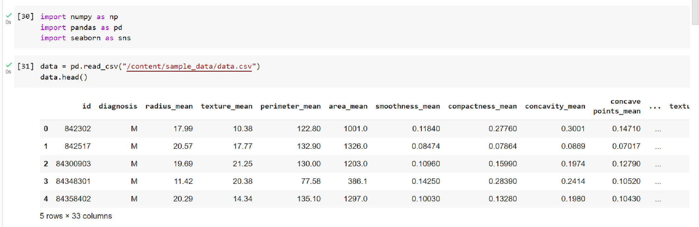
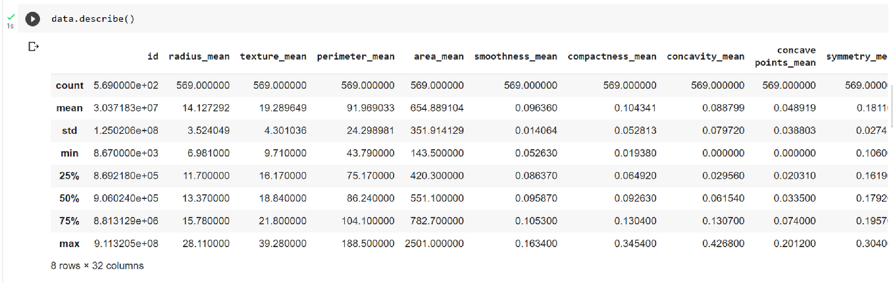
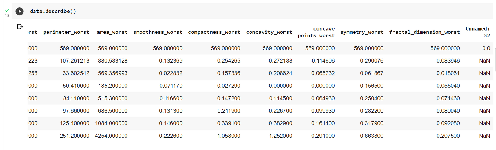
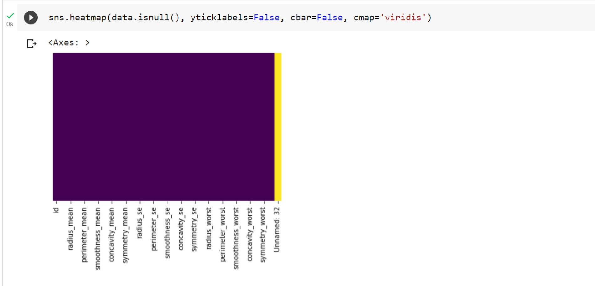
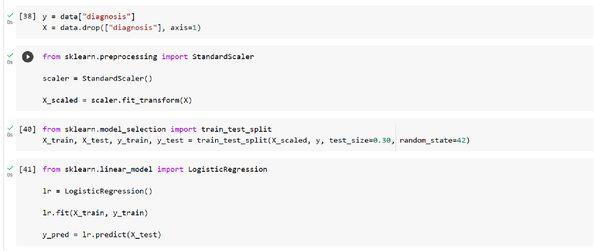
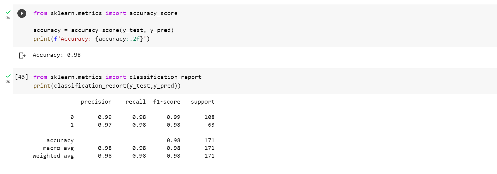

IN THIS PROJECT, WE WILL SEE HOW TO TRAIN A LOGISTIC REGRESSION MODEL. THIS IS INTENDED AS AN INTRODUCTION TO LOGISTIC REGRESSION. HOWEVER, WE WILL NOT GO THROUGH THE MATHEMATICAL INTUITION OF THE MODEL.
We will be working with the Breast Cancer dataset, which contains some very detailed measurements of cells. Along with each observation of measurements, we have the diagnosis of the cell (malignant or not). Our goal is to train a model that will be able to predict whether or not a given cell is malignant given only its measurements.
IMPORT THE DATA
This code imports the NumPy, pandas, and seaborn libraries. The NumPy, pandas, and seaborn libraries will be available for use in the current Python environment. These libraries offer a wide range of functionality for data manipulation, numerical computations, and data visualization, which can be helpful in various data analysis tasks.

CLEAN THE DATA BY USING A HEATMAP
This code snippet performs various operations on the DataFrame 'data' using the seaborn and pandas libraries. It generates a heatmap to visualize missing values in the DataFrame, drops specific columns ('Unnamed: 32' and 'id'), converts the values in the 'diagnosis' column to numerical values, and creates a bar plot to display the class distributions. The code provides insights into the missing data, data transformation, and visualization of class distributions in the 'diagnosis' column.
LOGISTIC REGRESSION PREPROCESSING

In this code snippet, the target variable ('diagnosis') and the predictors (all columns except 'diagnosis') are assigned based on the data DataFrame. The 'diagnosis' column is assigned to the variable y as the target variable, and all columns except 'diagnosis' are assigned to the variable X as the predictors. This separation of the target variable and predictors is a common practice in machine learning to prepare the data for modeling tasks such as training and evaluation.
NORMALIZE THE DATA
This code snippet performs the following steps:
- Importing necessary modules: The code imports the StandardScaler class from sklearn.preprocessing, train_test_split function from sklearn.model_selection, and LogisticRegression class from sklearn.linear_model.
- Preparing the data: An instance of the StandardScaler class is created and used to scale the features in the data using the fit_transform() method. The scaled features are stored in X_scaled.
- Splitting the data: The train_test_split function is used to split the scaled features (X_scaled) and the target variable (y) into training and testing sets. The test_size argument specifies the proportion of data to be used for testing, and the random_state argument ensures reproducibility of the split. The resulting training and testing sets are stored in variables X_train, X_test, y_train, and y_test.
- Training the logistic regression model: An instance of the LogisticRegression class is created, and the model is trained using the fit() method with the training data (X_train and y_train). The model adjusts its parameters to minimize the loss function during training.
- Making predictions: The trained logistic regression model is used to make predictions on the test data (X_test) using the predict() method. The predicted values are stored in the variable y_pred.
Overall, this code prepares the data, trains a logistic regression model on the scaled training data, and then uses the trained model to make predictions on the scaled test data.
EVALUATE THE MODEL
This code snippet performs the following steps:
- Importing necessary modules: The code imports the accuracy_score and classification_report functions from sklearn.metrics.
- Evaluating accuracy: The accuracy_score function is used to calculate the accuracy of the logistic regression model. It compares the predicted labels (y_pred) with the true labels (y_test), and the resulting accuracy score is stored in the variable accuracy.
- Printing accuracy: The accuracy of the model is printed using a formatted string, displaying the accuracy value with two decimal places.
- Generating classification report: The classification_report function is used to generate a detailed report for evaluating the performance of the logistic regression model. It compares the predicted labels (y_pred) with the true labels (y_test), and the resulting report is printed.
Overall, this code evaluates the accuracy of the logistic regression model by comparing the predicted labels with the true labels. It also provides a detailed classification report that includes metrics such as precision, recall, F1-score, and support for each class, along with the overall accuracy score.
SCENARIOS WHERE LOGISTIC REGRESSION CAN BE APPLIED AND WHERE OUR IMPLEMENTATION COULD BE USEFUL:
- DISEASE DIAGNOSIS - CAN BE USED TO PREDICT THE LIKELIHOOD OF A PATIENT HAVING A DISEASE BASED ON THEIR MEDICAL HISTORY AND OTHER RELEVANT FACTORS.
- CREDIT SCORING - CAN BE USED TO PREDICT WHETHER A CUSTOMER IS LIKELY TO DEFAULT ON A LOAN BASED ON THEIR FINANCIAL HISTORY AND OTHER RELEVANT FACTORS.
- CUSTOMER SEGMENTATION - CAN BE USED TO PREDICT WHETHER A CUSTOMER IS LIKELY TO BUY A PRODUCT BASED ON THEIR DEMOGRAPHIC AND BEHAVIORAL CHARACTERISTICS, AND CAN BE USEFUL IN MARKETING AND CUSTOMER RELATIONSHIP MANAGEMENT.